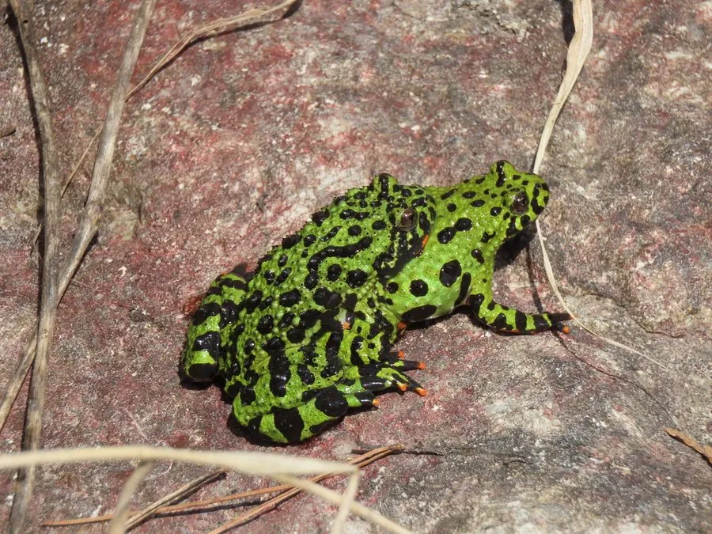

两栖动物 · 动物界
东方铃蟾 Bombina orientalis

东亚常见的小型蟾类，背部绿色带黑斑，腹部朱红，遇险时翻露腹部并发出警告声，皮肤毒素有刺激性。
- 分类
- 门脊索动物门纲两栖纲目无尾目科盘舌蟾科属铃蟾属
- 栖息环境
- 山间溪流、水潭、沼泽、农田与潮湿草地
- 地理分布
- 中国东北、华北以及朝鲜半岛、俄罗斯远东地区
- 保护级别
- IUCN 无危（LC）；中国未列入国家重点保护名录
物种志
东方铃蟾体长 4–6 厘米，身体小巧，背部呈鲜绿色或黄绿色，上面分布不规则的黑色或深褐色斑块，皮肤布满疣粒，腹面呈朱红、橙色或黄色，缀有黑色斑块；四肢短小，趾间有蹼，雄蛙在繁殖期前肢内侧会长出婚垫。
它分布于中国东北、华北及朝鲜半岛、俄罗斯远东地区，栖息于山间溪流、水潭、沼泽和农田附近，多在水中或水边活动，捕食昆虫、蠕虫和小型甲壳动物。每年 4–7 月繁殖，雌蛙产卵 50–200 枚，卵单粒或成小群附着在水草上，约 1–2 周孵化，蝌蚪在水中生活约 2 个月。它受威胁时会翻过身露出朱红色腹部，并发出短促的警告声，皮肤分泌物有刺激性，接触后需洗手；目前它未被列入国家重点保护名录。
形态与习性
- 食性昆虫、蠕虫和小型甲壳动物
- 体长4–6 cm
- 寿命约 10–15 年
- 繁殖卵生，每次 50–200 枚，约 1–2 周孵化
- 活动节律昼行性，多在水边活动
- 毒性皮肤分泌物有刺激性，接触后需洗手
趣味知识
- 东方铃蟾受惊时会翻过身，露出朱红色腹部警告捕食者。
- 它因醒目的红肚皮和铃声般的叫声而得名“铃蟾”。
- 东方铃蟾的皮肤分泌物有刺激性，接触后要及时洗手，避免揉眼。